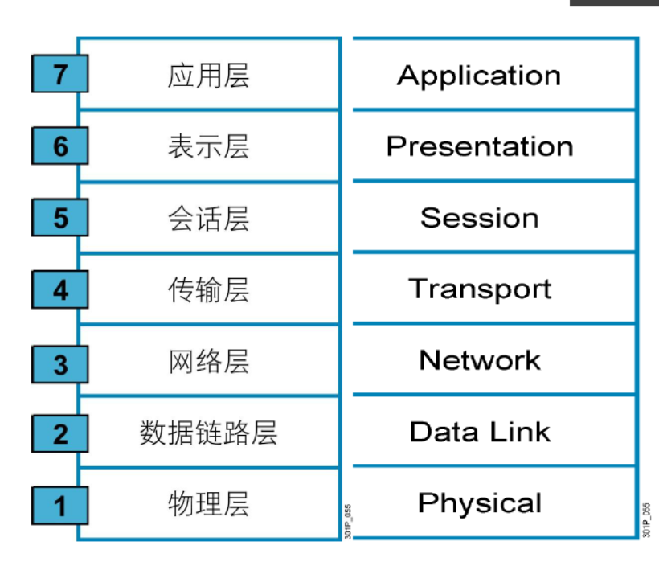

网络 ：通过某种媒介连接通信，这种媒介可以有形，也可以无形。
vpn ：虚拟的专有网络。
网络已经融入了我们的生活，与我们的生活息息相关，任何事情都需要通过网络通信，给我们的生活带来了无数的便捷，网络会借助文字阅读、图片查看、影音播放、下载传输、游戏、聊天等软件工具从文字、图片、声音、视频等方面给人们带来极其丰富的生活和美好的享受。
网络的特性：
速度
成本
安全性
可用性
可扩展性
可靠性
拓扑：
物理拓扑：总线拓扑、环线拓扑、星型拓扑
逻辑拓扑：逻辑拓扑描述了信息在网络中流动的方式
OS模型的七层结构
TCP/IP协议：
传输控制协议/因特网互联协议
TCP/IP是一个Protocol Stack，包括TCP、IP、UDP、ICMP、RIP、TELNET、FTP、SMTP、ARP等许多协议
最早发源于1969年美国国防部（缩写为DoD）的因特网的前身ARPA网项目，1983年1月1日，TCP/IP取代了旧的网络控制协议NCP，成为今天的互联网和局域网的基石和标准,由互联网工程任务组负责维护
共定义了四层
和OSI参考模型的分层有对应关系
静态指定:
ifconfig, route, netstat
ip: object {link, addr, route}, ss, tc
system-config-network-tui，setup
配置文件
动态分配：
DHCP: Dynamic Host Configuration Protocol
ifconfig命令
ifconfig [interface]
ifconfig -a
ifconfig IFACE [up|down]
ifconfig interface [aftype] options | address ...
ifconfig IFACE IP/netmask [up]
ifconfig IFACE IP netmask NETMASK
注意：立即生效
启用混杂模式：[-]promisc
route命令
路由管理命令
查看：route -n
添加：route add
常用组合：
-tan, -uan, -tnl, -unl
显示路由表：
netstat {--route|-r} [--numeric|-n]
-r: 显示内核路由表
-n: 数字格式
显示接口统计数据：
netstat {--interfaces|-I|-i} [iface] [--all|-a] [--extend|-e] [--program|-p] [--numeric|-n]
netstat -i
netstat –I=IFACE
ifconfig -s eth0
地址配置工具：nmcli
nmcli [ OPTIONS ] OBJECT { COMMAND | help }
device - show and manage network interfaces
nmcli device help
connection - start, stop, and manage network connections
nmcli connection help
修改IP地址等属性：
nmcli connection modify IFACE [+|-]setting.property value
setting.property:
ipv4.addresses ipv4.gateway
ipv4.dns1 ipv4.method manual | auto
修改配置文件执行生效：systemctl restart network
nmcli con reload
nmcli命令生效： nmcli con down eth0 ;nmcli con up eth0
格式：ss [OPTION]... [FILTER]
netstat通过遍历proc来获取socket信息，ss使用netlink与内核tcp_diag模块通信获取socket信息
选项：
-t: tcp协议相关
-u: udp协议相关
-w: 裸套接字相关
-x：unix sock相关
-l: listen状态的连接
-a: 所有
-n: 数字格式
-p: 相关的程序及PID
-e: 扩展的信息
-m：内存用量
-o：计时器信息